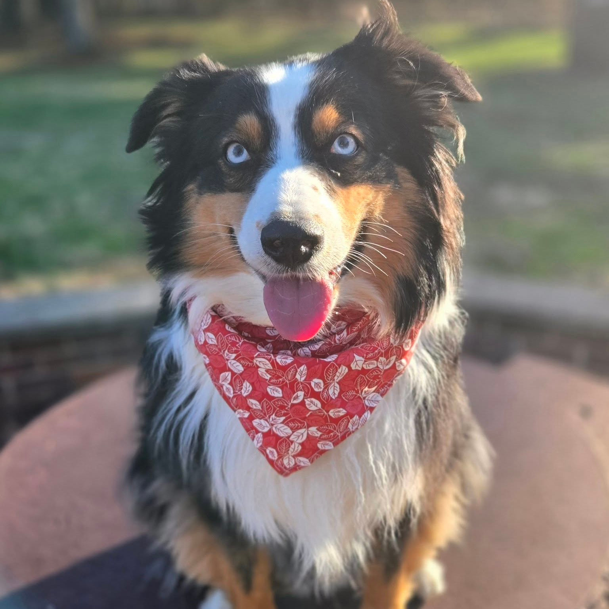

At a glance
Basics
- Breed / mix
- Australian Shepherd
- Age
- — (born Mar 18, 2022)
- Weight
- ~55 lb (last vet visit)
- Microchip
- HomeAgain #985 141 005 867 927
Meds & supplies
- Allergies
- None.
- Medications
- None daily.
- Flea / tick
- Simparica TRIO Chewable — 1st of month
- Shots
- Up to date on all shots. Annual boosters as needed.
Notes
Feeding
- Food
- IAMS Mini Chunks — 2 1/2 cups total per day
- Schedule
- 2 or 3 times daily. Times at home: 9:00 AM, 12:00 PM, 5:30 PM
- Human food
- She is allowed very small amounts only if she isn't begging. She knows she should lay down somewhat out of sight while you're eating.
Sleep & crate
- Overnight
- Will typically want to sleep next to your bed or on the foot of it. Crate available if she seems anxious (door open by default).
- Alone time
- OK alone as long as you've "Carina-proofed" the house. Otherwise she is perfectly content locked in her crate.
Manners
- People: Friendly, although a bit standoffish with strangers.
- Other dogs: Gets along well, either ignores them or pesters them to play.
- Cats: Fine with them in theory, terrified of most in practice. Acts tough if she sees one outside but does nothing up close.
- Crate: Crate trained and loves it as her safe space and chill spot. She'll want free access to it or a similiar dark nook.
- Loves to shred paper and cardboard. Her only bad habit. So be sure to keep your papers and cardboard out of reach. You can give her your junkmail for free shredding..
- Only barks when she is spooked. (Loud noises, knocking, people yelling nearby, etc.) If so use "Shh" and tell her it's ok. She will calm a bit. She may want to go into her crate for a second before she'll fully stop.
Tap to expand or collapse
She is much more responsive to hand gestures than verbal ones for these commands. Doing both at once will help.
- Sit
- Point down with your finger.
- Down
- Gesture down with a flat hand.
- Shake
- Hold out your hand, palm up.
- Wave
- Wave “hi.”
- Wait
- Open palm, “stop” gesture. Release with an okay. Somewhat reliable, still working on it.
- Shhh
- Finger to your mouth and make a shh sound. Won't instantly stop her barking but will get her to start calming down until she will.
- Spin
- Point down and spin your finger.
- Up
- Flat hand, palm facing up, gesturing upward. Contextual, she may jump in place, lean up on something, or get on top of something. She'll figure it out, she's smart.
- Come
- No real command, but is trained to come to a good mouth whistle (somewhat reliable), and to her electronic dog whistle (Very reliable and from up to a mile away).
- Crate
- Verbal command mostly.
Vet info
Vet
- Clinic
- Battle Ground Veterinary Clinic
- Phone
- (765) 742-2587
- Address
- 4410 Swisher Rd., West Lafayette, IN 47906